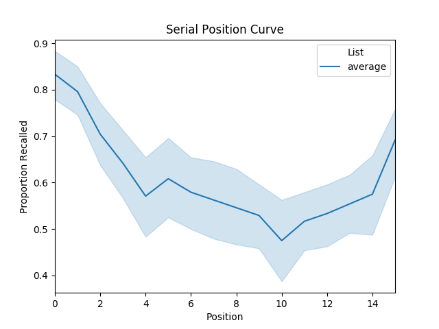

Note
Go to the end to download the full example code.
Plot serial position curve¶
This example plots the probability of recall success as a function of serial position during stimulus encoding.
<Axes: title={'center': 'Serial Position Curve'}, xlabel='Position', ylabel='Proportion Recalled'>
# Code source: Contextual Dynamics Laboratory
# License: MIT
# import
import quail
#load data
egg = quail.load('example')
# analyze and plot
fegg = egg.analyze('spc', listgroup=['average']*8)
fegg.plot(title='Serial Position Curve')
Total running time of the script: (0 minutes 0.567 seconds)